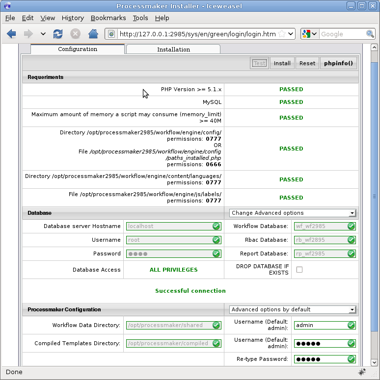
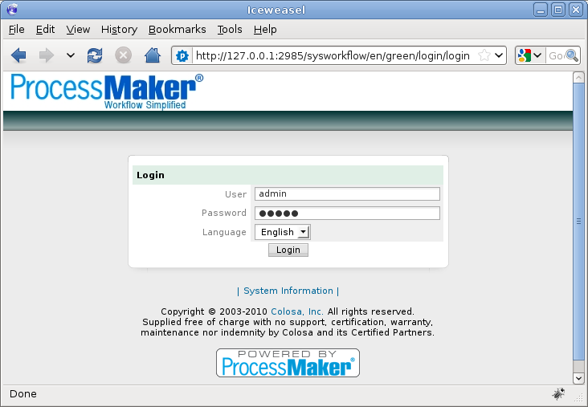

Overview
It is possible to have multiple installations of ProcessMaker running on the same server, either by configuring the installations to run on separate port numbers (e.g., example.com:80 and example.com:8080) or by using different domain names like (e.g., processmaker.example.com and processmaker2.example.com).
If already using processes in production, it is not recommended to upgrade to a new version of ProcessMaker without first testing your processes on a separate installation of ProcessMaker to verify that the upgrade won't introduce any unexpected bugs in your processes. Install a separate installation of ProcessMaker, then import your workspaces to that separate installation. Run your processes in the upgraded version of ProcessMaker and verify that there are no unexpected problems. Only then, upgrade your installation of ProcessMaker in production.
Install the ProcessMaker files
Download the tarball of the desired version of ProcessMaker at http://sourceforge.net/projects/processmaker/files/ProcessMaker/
The files are in .tar.gz format and can be extracted using most compression tools, like tar in Linux and WinRAR or 7-Zip in Windows. Extract the processmaker-X.X.X.tar.gz file in an empty directory, then rename the extracted processmaker directory to something different so it can be distinguished from the existing installation of ProcessMaker. For instance, if using version 2.5.2, it might be renamed to processmaker2_5_2. Then move the entire directory to /opt/, C:\opt\, C:\Program Files\, or a similar location in your server, which isn't publicly accessible to the internet.
In Linux/UNIX:
tar -xvzf processmaker-2.5.2.tar.gz temp
cd temp
mv processmaker processmaker2_5_2
cp -R processmaker2_5_2 /opt/
Now there is a /opt/processmaker directory with the existing installation of ProcessMaker and a /opt/processmaker2_5_2 directory for a new installation of ProcessMaker.
In MS Windows:
Use WinRAR or 7-Zip to extract the file processmaker-2.5.2.tar.gz on the desktop. Rename the extracted processmaker directory to processmaker2_5_2, then copy it to C:/opt, C:/Program Files, or wherever appropriate.
Then make certain subdirectories writable by the Apache server:
Linux/UNIX:
cd /opt/processmaker2_5_2
chmod -R 770 compiled shared
cd workflow/engine
chmod 770 config content/languages js/labels plugins xmlform
For some distributions, the owner of the ProcessMaker files may need to be changed to the appropriate user to access them through Apache.
In Debian/Ubuntu:
In Red Hat/CentOS/Fedora:
In openSUSE:
Windows:
Right click on the following folders, choose the option "Properties" from the dropdown menu. Then in the "Properties" dialog box, uncheck the option "Readonly":
C:\opt\processmaker2_5_2\compiled
C:\opt\processmaker2_5_2\workflow\engine\config\
C:\opt\processmaker2_5_2\workflow\engine\content\languages\
C:\opt\processmaker2_5_2\workflow\engine\js\labels\
C:\opt\processmaker2_5_2\workflow\engine\plugins\
C:\opt\processmaker2_5_2\workflow\engine\xmlform\
Configure Apache
First decide whether to use a separate port or separate domain name for the additional installation of ProcessMaker.
Using Separate Ports
If using a separate port, first use the command netstat -anb in Windows or netstat -tanp in Linux/UNIX to make sure that no program is already listening on that port. For example, the existing installation might use the default port 80 and the new installation might use the port 2052.
After verifying that the port is fire, open the Apache configuration file which configures ports with a bare text editor such as Notepad or Notepad++ in Windows or vim or gedit in Linux/UNIX. Some Linux/UNIX distributions have a separate file to configure ports, but some use the main Apache configuration file.
Red Hat/Fedora/Cent OS:
- /etc/httpd/conf/httpd.conf
Debian/Ubuntu:
- /etc/apache2/ports.conf or /etc/apache2/apache2.conf
SUSE/openSUSE:
- /etc/apache2/listen.conf or /etc/apache2/httpd.conf
Windows:
If Apache was manually installed:
- C:/Program Files/Apache Software Foundation/Apache2.2/conf/httpd.conf
If installed with the ProcessMaker Windows Installer:
- C:/Program Files/ProcessMaker/apache2/conf/httpd.conf
In the appropriate Apache configuration file, add the following line to listen for the additional IP address or port:
or:
For example, if the new installation will listen on port 8080 and be running on the local machine (127.0.0.1), then:
Close and save the Apache configuration file. Then, restart apache for the changes to take effect.
Edit ProcessMaker's Apache configuration file
After configuring Apache to use an additional port, edit the configuration file for ProcessMaker named pmos.conf, whose location depends on your operating system:
Red Hat/Fedora/Cent OS:
- /etc/httpd/conf.d/pmos.conf
Debian/Ubuntu:
- /etc/apache2/sites-available/pmos.conf
SUSE/openSUSE:
- /etc/apache2/sites-available/pmos.conf
Windows:
If ProcessMaker manual installation:
- C:\opt\processmaker\etc\pmos.conf
If ProcessMaker Automatic Installer, version 1.6-4260 and later:
- C:\Program Files\ProcessMaker\processmaker\etc\pmos.conf
If ProcessMaker Automatic Installer, before version 1.6-4260:
- C:\Program Files\ProcessMaker\apps\processmaker\conf\pmos.conf
In the pmos.conf file, add additional NameVirtualHost and
For instance, if ProcessMaker is installed in /opt/processmaker and listening at 127.0.0.1:80 and at /opt/processmaker2_5_2 and listening at 127.0.0.1:2052:
# the ServerName with you own subdomains.
NameVirtualHost 127.0.0.1:80
#processmaker virtual host
<VirtualHost 127.0.0.1:80 >
ServerName "127.0.0.1:80"
DocumentRoot /opt/processmaker/workflow/public_html
DirectoryIndex index.html index.php
<Directory "/opt/processmaker/workflow/public_html">
AddDefaultCharset UTF-8
AllowOverRide All
Options FollowSymlinks
Order allow,deny
Allow from all
RewriteEngine on
RewriteRule ^.*/(.*)$ sysGeneric.php [NC,L]
ExpiresActive On
ExpiresDefault "access plus 1 day"
ExpiresByType image/gif "access plus 1 day"
ExpiresByType image/png "access plus 1 day"
ExpiresByType image/jpg "access plus 1 day"
ExpiresByType text/css "access plus 1 day"
ExpiresByType text/javascript "access plus 1 day"
AddOutputFilterByType DEFLATE text/html
</Directory>
</VirtualHost>
NameVirtualHost 127.0.0.1:2052
#processmaker virtual host
<VirtualHost 127.0.0.1:2052 >
ServerName "127.0.0.1:2052"
DocumentRoot /opt/processmaker2_5_2/workflow/public_html
DirectoryIndex index.html index.php
<Directory "/opt/processmaker2_5_2/workflow/public_html">
AddDefaultCharset UTF-8
AllowOverRide All
Options FollowSymlinks
Order allow,deny
Allow from all
RewriteEngine on
RewriteRule ^.*/(.*)$ sysGeneric.php [NC,L]
ExpiresActive On
ExpiresDefault "access plus 1 day"
ExpiresByType image/gif "access plus 1 day"
ExpiresByType image/png "access plus 1 day"
ExpiresByType image/jpg "access plus 1 day"
ExpiresByType text/css "access plus 1 day"
ExpiresByType text/javascript "access plus 1 day"
AddOutputFilterByType DEFLATE text/html
</Directory>
</VirtualHost>
After editing the pmos.conf file, restart apache.
Using Separate Domain Names
If using a separate domain name for the additional installation of ProcessMaker, edit your DNS or hosts file (which is found at /etc/hosts in most distributions) to add new domain name which directs to the same IP address where ProcessMaker is already installed.
For example:
123.45.67.89 processmaker.example.com processmaker
123.45.67.89 processmaker2.example.com processmaker2
After editing the /etc/hosts files, the changes will immediately take effect immediately in most Linux/UNIX distributions, but changes to a DNS service service (such named), will generally require that the service be restarted for the new domain name to be recognized.
Edit ProcessMaker's Apache configuration file
After configuring Apache to use an additional port, edit the configuration file for ProcessMaker named pmos.conf (see above for its location).
In the pmos.conf file, add an additional
For example, the first installation of ProcessMaker is at /opt/processmaker and listening at processmaker.example.com and the second at /opt/processmaker2 and listening at processmaker2.example.com. Both are at the example.com server, whose IP address is 123.45.67.89:
# the ServerName with you own subdomains.
NameVirtualHost 123.45.67.89
#processmaker virtual host
<VirtualHost 123.45.67.89 >
ServerName "processmaker2.example.com"
DocumentRoot /opt/processmaker/workflow/public_html
DirectoryIndex index.html index.php
<Directory "/opt/processmaker/workflow/public_html">
AddDefaultCharset UTF-8
AllowOverRide All
Options FollowSymlinks
Order allow,deny
Allow from all
RewriteEngine on
RewriteRule ^.*/(.*)$ sysGeneric.php [NC,L]
ExpiresActive On
ExpiresDefault "access plus 1 day"
ExpiresByType image/gif "access plus 1 day"
ExpiresByType image/png "access plus 1 day"
ExpiresByType image/jpg "access plus 1 day"
ExpiresByType text/css "access plus 1 day"
ExpiresByType text/javascript "access plus 1 day"
AddOutputFilterByType DEFLATE text/html
</Directory>
</VirtualHost>
#processmaker virtual host
<VirtualHost 123.45.67.89 >
ServerName "processmaker2.example.com"
DocumentRoot /opt/processmaker2_5_2/workflow/public_html
DirectoryIndex index.html index.php
<Directory "/opt/processmaker2_5_2/workflow/public_html">
AddDefaultCharset UTF-8
AllowOverRide All
Options FollowSymlinks
Order allow,deny
Allow from all
RewriteEngine on
RewriteRule ^.*/(.*)$ sysGeneric.php [NC,L]
ExpiresActive On
ExpiresDefault "access plus 1 day"
ExpiresByType image/gif "access plus 1 day"
ExpiresByType image/png "access plus 1 day"
ExpiresByType image/jpg "access plus 1 day"
ExpiresByType text/css "access plus 1 day"
ExpiresByType text/javascript "access plus 1 day"
AddOutputFilterByType DEFLATE text/html
</Directory>
</VirtualHost>
After editing the pmos.conf file, restart apache.
ProcessMaker Installation Setup
Open your web browser and direct it to the IP address and port where the second installation is configured to listen. For instance, if listening at 127.0.0.1 on port 2052, then go to http://127.0.0.1:2052
The web browser should be redirected to the ProcessMaker configuration page:

In the Databases section, enter the Username and Password to connect to the MySQL. In most installations, the user will be "root" and the root password for MySQL, but you may have configured it differently.
In the Databases section, select the option Change Advanced Options in the dropdown box. Then, enter new names for the MySQL Workflow database, Rbac database, and Report database. Remember that database names can not be longer than 16 characters.
For instance, if the databases of the previous installation were named the default "wf_workflow", "rb_workflow" and "rp_workflow", then they could be renamed as "wf_workflow252", "rb_workflow252" and "rp_workflow252".
Do NOT use the same database names as your previous installation of ProcessMaker, because then both installations will be accessing the same databases, which could corrupt the data (especially if using different versions of ProcessMaker).
In the ProcessMaker Configuration section, also select the option Change Advanced Options in the dropdown box. Then, change the Workflow Data Directory to /opt/processmaker2/shared and Compiled Templates Directory to /opt/processmaker2/compiled to prevent it from overwriting the existing installation. Failure to change the directories will cause the shared and compiled directories in the existing installation to be overwritten and will corrupt their data.
Set the user and password credentials for the administrator user in the ProcessMaker Configuration section.
Important! The “admin” user will be able to access to all the features and functionality in your ProcessMaker installation, such as: system configuration, processes creation and editing, user and group management, case management, and report and dashboard oversight among others. Thus, it is strongly recommended you take care to configure a difficult-to-guess password for this account. Take a look at this list of password dos and don’ts. You may also consider using a strong password generator like this one.
Click on the Test button to verify that all the entered values are valid. They should be displayed in green. If a database name is displayed in red, it indicates that the database already exists and a different database name will have to be entered.

Then, click the Install button to begin installing the new databases and configuring ProcessMaker to use them.

After finished installing, click the Finish Installation button to be redirected to the login screen at:

Then enter the following credentials to login to ProcessMaker:
Password: admin
Now it should be possible to login into the different installations of ProcessMaker, at different IP addresses or port numbers. For the above example, login at http://localhost for the previous installation and at http://localhost:2052 for the new installation. Bold text